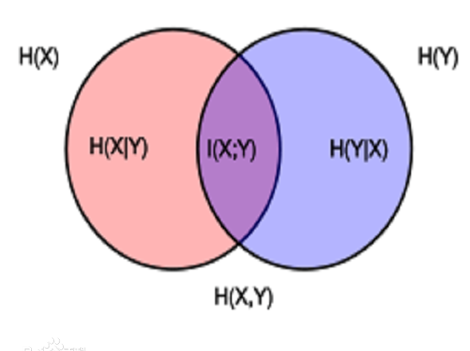
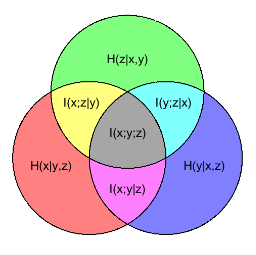
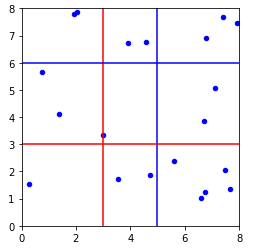
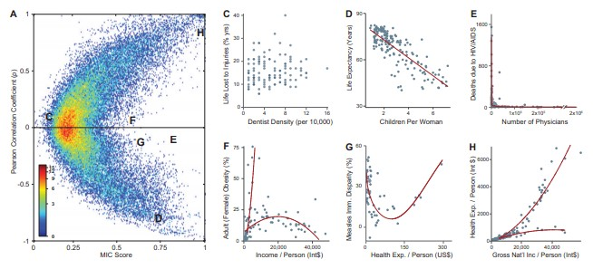

信息量(自信息)
信息奠基人香农(Shannon)认为“信息是用来消除随机不确定性的东西”. 一个事件蕴含的信息量与这条信息能够消除的不确定性是正相关的. 信息量应该满足如下条件:
- 事件发生的概率越低, 信息量越大;
- 事件发生的概率越高, 信息量越低;
- 多个对立事件同时发生, 总信息量是多个事件信息量相加.
由此确定的信息量表示为:
$$
I(x)=-\log_{2}p(x)
$$
其中, $p(x)$表示随机事件发生的概率. 可以看出, 自信息的计算和随机变量本身数值没有关系, 只和其概率有关.
熵(entropy)
对于一个变量$X \sim p$($X$服从$p$分布), 该变量的熵是描述其不确定性的量, 表示该变量蕴含的信息量的期望(平均信息量).
eg:对于一个有k个状态的离散随机变量$X$, 有
$$
H(X)=-\sum_{k=1}^Kp(X=k) \log p(X=k)
$$
a.当 $\log$ 以2为底的时候称之为bits,结果可以视为多少个二进制位可以表示该变量
b.当 $\log$ 以e为底的时侯称之为 nats
熵只依赖于随机变量的分布, 与随机变量取值无关, 所以也可以将 $X$ 的熵记作$ H(p)$.
$0log0=0$.
熵的基本性质:
- 非负性: $𝐻(𝑋) ≥ 0$, 等号表明确定场(无随机性)的熵最小;
- 极值性: $𝐻(𝑋) ≤ \log |X|$, 其中等号成立当且仅当$p(x)=\frac 1{\mid x \mid}$, 这里$\mid X \mid$表示集合$X$中的元素个数. 该性质表明等概场具有的最大熵;
- 熵描述了随机变量的不确定性, 熵越大，随机变量的不确定性就越大，分布越混乱;
- 熵描述了随机变量的平均信息量;
联合熵和条件熵
设$X$、$Y$是两个离散型随机变量, 它们的联合分布为$𝑝(𝑥, 𝑦)$, 则$X$ 、$Y$的联合熵定义为
$$
H(X,Y)=-\sum_{x \in X} \sum_{y \in Y} p(x, y) \log p(x, y)
$$
设$X$、$Y$是两个离散型随机变量, 它们的联合分布为$𝑝(𝑥, 𝑦)$, 则给定𝑋时𝑌的条件熵定义为
$$
\begin {align}
H(Y|X) & =\sum_{x \in X} p(x)H(y|X=x) \\
& =-\sum_{x \in X} \sum_{y \in Y} p(x, y) \log p(y|x) \\
& =E[-\log (y \mid x)] \\
\end {align}
$$
联合熵和条件熵的直观含义见下图:

链式规则:
$$
H(X, Y) = H(Y|X) + H(X)
$$
$$
\begin {align}
H(X_1, X_2, X_3) &= H(X_1) + 𝐻(X_2, X_3 \mid X_1) \\
&= H(X_1) + 𝐻(X_2 \mid X_1) + 𝐻(X_3 \mid X_1, X_2) \\
\end {align}
$$
定理:
$$
\begin {align}
& H(X \mid Y) \le H(X) \\
& H(X, Y) \le H(X) + H(Y)
\end {align}
$$
交叉熵 (cross entropy)
设随机变量$X$的分布密度为$𝑝(𝑥)$, $𝑞(𝑥)$是通过统计手段得到的$X$的近似分布, 则随机变量$X$的交叉熵定义为
$$
H(X,q)=-\sum_{x \in X}p(x) \log q(x)
$$
note: 有的文章中交叉熵表示为 $H(p, q)$ . 该表示方法与联合熵相似, 需按照上下文确定.
交叉熵可以看作是当我们用模型 $q$编码来自模型$p$的变量时所需的平均bits(如果$\log$以2为底的话)
所以, 有$H(p)=H(p,p)$,所以KL距离就可以看做是：用模型q来编码来自模型p的变量所需的额外bits！
若存在$X$的真实分布为$p(x)$, 它的两个近似分布为$𝑞_1(𝑥)$ , $𝑞_2(𝑥)$ , 并且$𝐻(p, q_1)< 𝐻(p, q_2)$ , 则$𝑞_1$是更好的近似分布.
应用
- 损失函数
- 语言模型评价方法(实际上是熵率)
熵率
熵率可以直观的理解为一个长度为$n$的随机变量序列，该序列的熵随$n$增长的增长率.
定义: 当如下极限存在时, 随机过程$\{X_i\}$ 的熵率定义为:
$$
H(\chi) = \lim_{n \to \infty} \frac 1nH(x_1, x_2, \dots, x_n)
$$
同时定义一个与熵率相关的量
$$
H’(\chi)= \lim_{n \to \infty}H(X_n|X_1,X_2,….X_{n-1})
$$
性质: 对于平稳随机过程，以上两者极限均存在，且有 $H(\chi)= H’(\chi)$
该性质非常常用, 为了证明这个性质, 引入如下两个定理:
定理一: 对于平稳随机过程, $H(X_n|X_1,X_2,….X_{n-1})$ 随 $n$ 递减, 且存在极限 $H’(\chi)$.
证明 如下:
$$
\begin {align}
H(X_{n+1} \mid X_1,X_2,….X_n) & \le H(X_{n+1} \mid X_2,….X_n) \\
& = H(X_n|X_1,X_2,….X_{n-1})
\end {align}
$$
不等式由条件作用使熵减小这个性质得到, 等式由平稳随机过程的性质得到.
所以, $H’(\chi)$ 是非负且递减的, 即: $H’(\chi)$ 存在.
定理二: (Cesaro 均值): 若 $a_n \to a$, 且 $b_n = \frac 1n \sum_{i=1}^n a_i$, 则 $b_n \to a$
证明略
下面证明熵率的性质: 对于平稳随机过程，以上两者极限均存在，且有 $H(\chi)= H’(\chi)$ .
有联合熵的链式法则知:
$$
\frac 1n H(x_1, x_2, \dots, x_n) = \frac 1n \sum_{i=1}^n H(X_n|X_1,X_2,….X_{n-1})
$$
即: 熵率为条件熵的时间平均. 由定理一知 条件上趋于极限 $H’(\chi)$.
又 由Cesaro 均值可知:
$$
\begin {align}
H(\chi) & = \lim_{n \to \infty} \frac 1nH(x_1, x_2, \dots, x_n) \\
& = \lim_{n \to \infty}H(X_n|X_1,X_2, \dots, X_{n-1}) \\
& = H’(\chi) \\
\end {align}
$$
平稳马尔可夫链的熵率
设 $ \{X_i\}$为平稳马尔可夫链，且其平稳分布为 $\mu$ , 转移矩阵为 $P$ , 则熵率为:
$$
\begin {align}
H(\chi) &= H’(\chi) \\
&= \lim_{n \to \infty}H(X_n|X_1,X_2,\dots, X_{n-1}) \\
&= \lim_{n \to \infty} H(X_n \mid X_{n-1}) \\
&= H(X_2 \mid X_1) \\
&= -\sum_{ij} p(X_1 = \mu_i, X_2 = \mu_j) \log p(X_2 = \mu_j \mid X_1 = \mu_i) \
&= -\sum_{ij} p(X_1 = \mu_i) p(X_2 = \mu_j \mid X_1 = \mu_i) \log p(X_2 = \mu_j \mid X_1 = \mu_i) \
&= -\sum_{ij} \mu_i P_{ij}\log{P_{ij}} \\
\end {align}
$$
note: 熵率 可以理解为 随机过程的 “熵” .
应用:
- 语言模型评价方法
相对熵
这个值是用来衡量两个分布之间相异度的,
设$p(x)$ 是随机变量X的真实分布密度, $q(x)$是通过统计手段得到的X的近似分布, 则二者间相对熵定义为:
$$
D_{KL}(p||q)=-\sum_{k=1}^Kp_k \log \frac{p_k}{q_k}
$$
如果是连续的随机变量, 把$\sum$用积分 符号替换就好了
对上式进行转化：
$$
D_{KL}(p||q)=\sum_{k}{p_k} \log{p_k} -\sum_kp_k \log q_k=-H(p)+H(p,q)
$$
其中$H(p,q)$为交叉熵, $p$ 为真是分布, $q$为近似分布.
相对熵也称作
– Kullback-Leibler 发散度、KL发散度
– Kullback-Leibler 距离、KL距离
KL距离就可以看做是：
- 相对熵描述同一个随机变量的不同分布的差异
- 相对熵描述了因为错用分布密度而增加的信息量
- 用模型$q$来编码来自模型$p$的变量所需的额外bits！
- 因为是“额外的”, 所以 KL的距离的值一定大于$0$, $D_{KL}=0$当且仅当$p=q$.
应用于推荐系统的一个例子
在使用LDA(Latent Dirichlet Allocation)计算物品的内容相似度时, 我们可以先计算出物品在话题上的分布, 然后利用两个物品的话题分布计算物品的相似度. 比如, 如果两个物品的话题分布相似, 则认为两个物品具有较高的相似度, 反之则认为两个物品的相似度较低.
note: 交叉熵和相对熵其实是等价的, 那么在实际问题中该怎么选择呢?
交叉熵大量应用在sigmoid函数和softmax函数中，最典型的算法应该就是神经网络和逻辑回归吧，而相对熵大量应用在生成模型中，例如GAN、EM、贝叶斯学习和变分推导中。从这里我们可以看出:
- 如果想通过算法对样本数据进行概率分布建模，那么通常都是使用相对熵，因为我们需要明确的知道生成的分布和真实分布的差距，最好的KL散度值应该是0；
- 而在判别模型中，仅仅只需要评估损失函数的下降值即可，交叉熵可以满足要求，其计算量比KL散度小。
互信息(Mutual Information)
互信息可以评价两个分布之间的距离，这主要归因于其对称性，假设互信息不具备对称性，那么就不能作为距离度量，例如相对熵，由于不满足对称性，故通常说相对熵是评价分布的相似程度，而不会说距离。
互信息的定义为：一个随机变量由于已知另一个随机变量而减少的不确定性.
$$
\begin {align}
I(X; Y) & = H(X) - H(X \mid Y)=H(Y) - H(Y \mid X) \\
& = H(X) + H(Y) - H(X, Y) \\
& = H(X, Y) - H(X \mid Y) - H(Y \mid X) \\
\end {align}
$$
再来看一下这张图理解一下:
对于三个变量的 联合熵, 条件熵, 互信息 的直观含义见下图:

互信息用于衡量两个随机变量分布之间的距离, 相关性, 独立性。
我们知道如果$p(x,y)=p(x)p(y)$, 则X和Y互相独立(不相关), 基于这个前提我们也可以使用$p(x,y)$ 与 $p(x)p(y)$ 的关系 来定义 两个随机变量$x$和$y$ 的相关性(相互独立的程度).
互信息使用相对熵度量$ p(x,y)$与$p(x)p(y)$之间的关系：
$$
I(X; Y) = D_{KL}(p(X,Y)||p(X)p(Y))= - \sum_{x \in X}\sum_{y \in Y}p(x,y)\log \frac{p(x,y)}{p(x)p(y)}
$$
如: X和Y互相独立, $p(x,y)=p(x)p(y)$, 对数项为0 则 $I(X, Y) = 0$. 反之 两个变量相关性越强, 则$I(X, Y)$ 越大.
互信息是大于等于0的，当且仅当X与Y相互独立时候等号成立。
PMI
另一个与MI有关的的定义是pointwise mutual information(PMI),
$$
PMI(x,y)=\log \frac{p(x,y)}{p(x)p(y)}=\log \frac{p(x|y)}{p(x)}=\log \frac{p(y|x)}{p(y)}
$$
可以得知 MI值其实就是PMI值的期望, 该数值衡量了${p(x,y)}$ 和 ${p(x)p(y)}$ 的差异性, 即: the discrepancy between these events occuring together compared to what would be expected by chance.
最大互信息系数(maximal information coefficient)
上面介绍的互信息都是针对离散随机变量计算的, 对于连续随机变量互信息定义为:
$$
I(X, Y) = D_{KL}(p(X,Y)||p(X)p(Y))= - \int_x \int_y p(x,y)\log \frac{p(x,y)}{p(x)p(y)} dx dy
$$
$p（x，y）$是联合概率密度分布函数.
在生产环境下, 我们经常会遇到这样的情况, 数据特征是连续型特征, 但是我们是基于有限个样本进行分析的. 为了获得这些连续型特征(随机变量)的概率密度函数通常比较麻烦(如 核密度估计), 对于两个变量的联合概率密度分布的计算就更加的复杂了. 即: 连续随机变量 的联合概率计算相对来说比较麻烦. 所以我们就要找一个办法来解决这个问题.
MIC 就是解决这个问题的. MIC 的思想是将两个变量离散化. 方法是 将当前二维空间在 x,y 方向分别划分为一定的区间数，然后查看当前的数据点(样本)在各个方格中落入的情况，并且使用散点图来表示，这样就解决了在互信息中的联合概率难求的问题。具体流程如下:
给定网格化的列数 $c$ 和行数 $r$, 对XY构成的二维坐标空间进行$c$列$r$行网格化(即对连续空间离散化), 此时可能有若干种网格化方案. 求出每种网格化方案对应的互信息值, 并找出其中的最大值 $ \max_{G \in \mathcal G (c, r)} I(x_G ; y_G)$
假设$c=2$, $r=2$. 则可能有以下红、蓝两种网格化方案（实际上会更多），分别计算每个网格化方案对应的互信息值，找出使互信息值最大的网格化方案。
对互信息值进行归一化: $\frac {\max_{G \in \mathcal G(c, r)} I(x_G ; y_G)} {\log \min(c, r)}$ .
选取所有离散化方案中互信息的最大值作为MIC值: $c$, $r$ 有多种选取方案, 在所有的备选方案中选取一个使归一化的互信息最大的值 即:
$$
MIC = \max_{c \times r \lt B} \frac {\max_{G \in \mathcal G (c, r)} I(x_G ; y_G)} {\log \min(c, r)}
$$
其中:
- $c$, $r$ 是在 x,y 方向上的划分格子的个数，本质上就是网格分布;
- $B$ 是变量，在原作者的论文当中提到 B 的大小设置是数据量的 0.6 次方. 具体为甚么用这个值, 猜测应该是经验吧;
- $\mathcal G (c, r)$ 是在给定$c$, $r$ 后, 所有的网格化方案的集合, $G \in \mathcal G(c, r)$;
- $x_G$, $ y_G$ 分别表示在网格化方案 $G$ 中 变量 $x$ 和 $y$ 对应的离散序列.
MIC总结
目的: 用于衡量两个变量X和Y的线性或非线性的强度。
特点:
- 普适性。不仅可以发现变量间的线性函数关系，还能发现非线性关系(如指数的，周期的)；
- 均衡性。MIC度量不仅可以用来纵向比较同一相关关系的强度，还可以用来横向比较不同关系的强度。比如: 对于相同噪声水平的两个函数关系(如一个指数的，另一个是周期的)，MIC度量具有近似的值。
缺点: MIC的统计能力遭到了一些质疑，当零假设不成立时，MIC的统计就会受到影响。在有的数据集上不存在这个问题，但有的数据集上就存在这个问题.
针对MIC的两个特点, 在《Machine Learning - A Probabilistic Perspective》一书中使用了如下图解释

该图使用的数据源是具有357个变量(特征)的数据集, 左图中的每个点是这些特征的一个两个组合(共63566个), 横坐标表示两个特征 的MIC, 纵轴是相关系数. 右边选取了六对特征组合, 并刻画出了其关系图.
- 从右图可以看出C表示的两个特征的分布是没有规律的, 不具有相关性, 其相关系数接近0, MIC接近0.
- H或者D 表示的随机变量具有近似的线性关系, 其相关系数和MIC都很高.
- EFG表示的随机变量基本没有线性关系, 所以相关系数接近于0, 但是从右图可以看出其都具有非线性关系. 所有MIC值比较大.
开源工具: minepy - Maximal Information-based Nonparametric Exploration
其python api 地址:http://minepy.sourceforge.net/docs/1.0.0/python.html
信息增益
信息增益是决策树ID3算法在进行特征切割时使用的划分准则，其物理意义和互信息完全相同，并且公式也是完全相同。其公式如下：
$$
g(D, A) = H(D) - H(D \mid A)
$$
其中D表示数据集，A表示特征，信息增益表示得到A的信息而使得类X的不确定度下降的程度，在ID3中，需要选择一个A使得信息增益最大，这样可以使得分类系统进行快速决策。
需要注意的是：在数值上，信息增益和互信息完全相同，但意义不一样，需要区分，当我们说互信息时候，两个随机变量的地位是相同的，可以认为是纯数学工具，不考虑物理意义，当我们说信息增益时候，是把一个变量看成是减少另一个变量不确定度的手段。
信息增益率
信息增益率是决策树C4.5算法引入的划分特征准则，其主要是克服信息增益存在的在某种特征取无意义值的时候导致的决策树划分特征失误的问题。例如假设有一列特征是身份证ID，每个人的都不一样，其信息增益肯定是最大的，但是对于一个情感分类系统来说，这个特征是没有意义的，此时如果采用ID3算法就会出现失误，而C4.5正好克服了该问题。其公式如下：
$$
g_r(D, A) = \frac {g(D, A)} {H(A)}
$$
基尼系数
基尼系数是决策树CART算法引入的划分特征准则，其提出的目的不是为了克服上面算法存在的问题，而主要考虑的是计算快速性、高效性，这种性质使得CART二叉树的生成非常高效。其公式如下：
$$
\begin {align}
Gini(p) & = \sum_{i=1}^m p_i (1-p_i) \\
& = 1 - \sum_{i=1}^m p_i^2 \\
& = 1 - \sum_{i=1}^m (\frac {| C_k |}{|D|})^2
\end {align}
$$
可以看出，基尼系数越小，表示选择该特征后熵下降最快，对分类模型效果更好，其和信息增益和信息增益率的选择指标是相反的。基尼系数主要是度量数据划分对训练数据集D的不纯度大小，基尼系数越小，表明样本的纯度越高。
这里还存在一个问题，这个公式显得非常突兀，感觉突然就出来了，没有那种从前人算法中改进而来的感觉？其实为啥说基尼系数计算速度快呢，因为基尼系数实际上是信息熵的一阶进似，作用等价于信息熵，只不过是简化版本。根据泰勒级数公式，将$f(x) = - \ln (x)$ 在 $x=1$ 处展开，忽略高阶无穷小，其可以等价为 $f(x) = 1 - x$ , 所以可以很容易得到上述定义。
参考资料：
信息论(Information theory)的一些point
Machine Learning - A Probabilistic Perspective